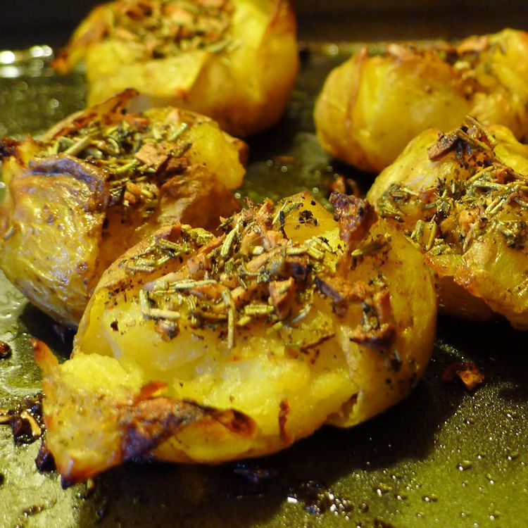

Smashed Potato

Description
A versatile and classic side dish. Simple to make, crispy skined, with a charismatic flavor!
Ingredients
- Potatoes
- Oil
- Balsamic Vinegar
- Butter
- Seasonings:
- garlic
- dried rosemary
- dried sage
- ground thyme
- dried savory
- sea salt
- black pepper
Directions
- Place potatoes in a saucepan; fill with enough water to cover potatoes. Bring to a boil; reduce heat to
medium-low and cook potatoes until tender but not mushy, about 15 to 20 minutes. Drain potatoes in a
colander; transfer to a baking sheet lined with a clean dish towel and allow to cool and dry out a little,
about 10 minutes.
- While potatoes are cooling, mix olive oil, balsamic vinegar, butter, garlic, rosemary, sage, thyme, savory,
salt, and pepper in a bowl until well combined.
- Preheat the oven to 450 degrees F (230 degrees C). Line a baking sheet with parchment paper.
- Place cooled potatoes in a single layer on the prepared baking sheet. Use a potato masher or the heel of
your hand to lightly press down on potatoes to crush them.
- Spoon the oil-herb mixture over each smashed potato.
- Bake potatoes in the preheated oven until crispy, about 25 minutes. Let cool slightly before serving.
- Enjoy!